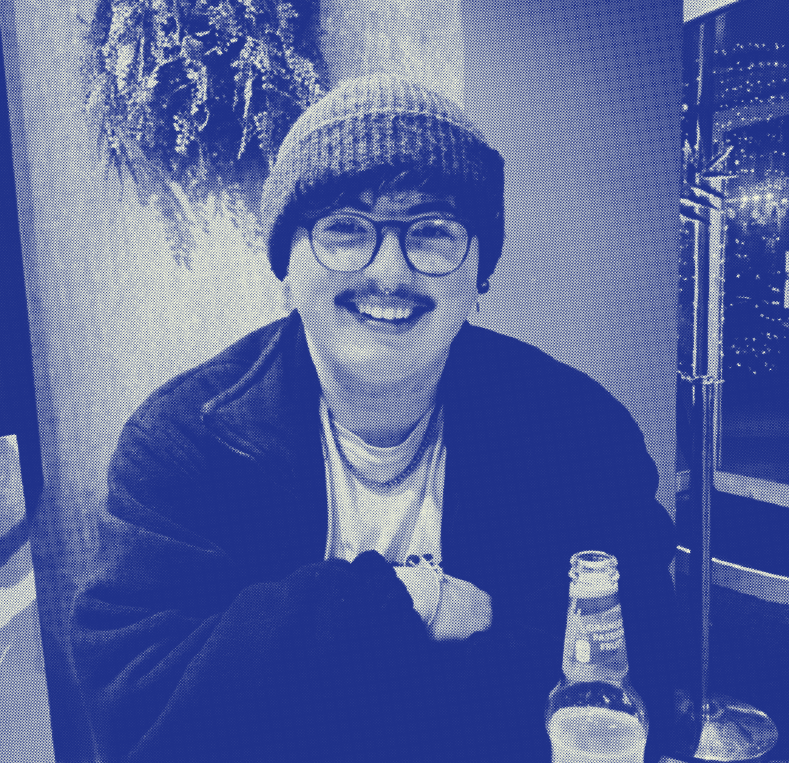

colin orr
hi! i'm an illustrator and graphic designer based in east lothian, scotland.
i'm inspired by scottish flora and fauna, architecture, and colourful palettes.

hi! i'm an illustrator and graphic designer based in east lothian, scotland.
i'm inspired by scottish flora and fauna, architecture, and colourful palettes.